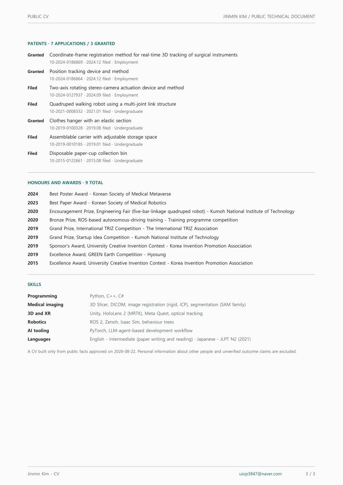

Curriculum vitae
A record of carrying 3D registration and robot software into working systems. Everything below is an approved public fact, and the same content is available as a PDF.
Jinmin Kim김진민
Robot Software Engineer — 3D Registration, Medical Imaging, Robot Systems
An R&D engineer whose work spans surgical navigation, XR, 3D registration, multi-sensor integration, and autonomous-forklift field deployment. I connect coordinate models and algorithms to physical devices, user interfaces, and explicit validation flows.
- Daegu, Republic of Korea
- Email: uiop3847@naver.com
- GitHub: github.com/rafaam11
- LinkedIn: linkedin.com/in/rlawlsals
Education
-
DGIST
M.S. in Robotics and Mechatronics Engineering
- Surgical Robotics and Augmented Reality Laboratory (advisor: Jaesung Hong) — surgical navigation team
- Thesis: Virtual Jawbone Reduction Planning based on Dental Occlusion for Mandibular Fracture Surgery
- Multi-centre oral and maxillofacial AR surgery programme (2021.06 - 2023.05) — early and supporting development of the Unity-based AR navigation
-
Kumoh National Institute of Technology
B.S. in Mechanical System Engineering
- Undergraduate researcher, System & Vision Lab. (2019 - 2020); completed the DGIST and UNIST summer undergraduate research programmes
- Designed and built a five-bar-linkage quadruped robot (2020.04 - 2021.01) — mechanism design, kinematic modelling, and control, leading to a patent application and an engineering-fair award
- Vice president of the invention club (2019) — several patent applications and invention-contest awards; the club was designated an outstanding education-donation club by the Ministry of Education
Experience
-
DIGITRACK Inc.
Researcher · Software Development
A DGIST spin-off medical-device and robotics company (marker-based 3D optical tracking devices and software), Daegu
Surgical navigation and medical imaging
- Over three years of collaboration with the oral and maxillofacial surgery department of Samsung Medical Center — biweekly clinical meetings since 2023, with two government programmes and one development contract carried as the main engineer.
- Sole developer of the 3D Slicer-based surgical-navigation software in use at the hospital — registering and overlaying the surgical plan through optical tracking, and building an AR surgical guide on a registered HoloLens 2 coordinate frame.
- Built a patient-and-clinician consultation XR application on Meta Quest, synchronising spatial, voice, and scenario state across users.
- Led development of the NeuroPilot rTMS coil-navigation system — digital-twin visualisation of coil pose (health-technology government programme).
- Low-dose C-arm 3D navigation — connected C-arm imaging to the 3D navigation workflow and implemented the owned feature scope.
- Own surface-guided respiratory tracking and 4D CBCT registration for radiotherapy (large KERI programme, 2026.06 - ).
- Delivered several development contracts for research institutes including KERI and KIMM.
3D optical tracking software
- Develop and maintain the API and Viewer software for SKADI, the in-house optical 3D tracker — the software layer of a product line delivered to Korean surgical-navigation companies and research institutes.
- Wrote a 3D Slicer custom-application template so research groups can start a navigation prototype immediately.
Industrial robotics — autonomous forklift (2025 - )
- Designed and implemented the safety-policy manager for the in-house autonomous-forklift solution (DOTORI) and integrated LiDAR and ToF sensors over the Zenoh and ROS 2 network.
- Own vision R&D — truck-loading vision with ToF and RGB fusion, a SAM-family segmentation proof of concept, and behaviour-tree integration.
- Deployed, commissioned, and operated the system at two production sites, including the field-deployment engineering.
Personal — building with AI (2026 - )
- LLM Wiki — built and operate a personal knowledge system driven by AI agents. I own the framing, architecture, and verification while delegating much of the implementation to agents, and run the real-data migration and daily automation routines (TypeScript, Python, PostgreSQL, MCP).
Publications and presentations
- Development and Clinical Evaluation of an Extended Reality-Based Consultation Platform "OMFS VR Consultation App" for Enhanced Patient Understanding in Orthognathic Surgery
- A Proof of Concept: Optimized Jawbone-Reduction Model for Mandibular Fracture Surgery
- Set-up of Dental Final Occlusion using Haptic Device in Orthognathic Surgery
- Occlusion-based Jawbone Model Optimization for Mandibular Fracture Surgery
- Dental Occlusion Model Using Arch Line for Mandibular Fracture Surgery
- Virtual Jawbone Model Reconstruction for Mandibular Fracture Surgery Guidance
- Design of Ping-Pong Ball Launcher
Patents7 applications · 3 granted
- GrantedCoordinate-frame registration method for real-time 3D tracking of surgical instruments
- GrantedPosition tracking device and method
- FiledTwo-axis rotating stereo-camera actuation device and method
- FiledQuadruped walking robot using a multi-joint link structure
- GrantedClothes hanger with an elastic section
- FiledAssemblable carrier with adjustable storage space
- FiledDisposable paper-cup collection bin
Honours and awards9 total
- Best Poster Award
- Best Paper Award
- Encouragement Prize, Engineering Fair (five-bar-linkage quadruped robot)
- Bronze Prize, ROS-based autonomous-driving training
- Grand Prize, International TRIZ Competition
- Grand Prize, Startup Idea Competition
- Sponsor's Award, University Creative Invention Contest
- Excellence Award, GREEN Earth Competition
- Excellence Award, University Creative Invention Contest
Skills and languages
- Programming
- Python, C++, C#
- Medical imaging
- 3D Slicer, DICOM, image registration (rigid, ICP), segmentation (SAM family)
- 3D and XR
- Unity, HoloLens 2 (MRTK), Meta Quest, optical tracking
- Robotics
- ROS 2, Zenoh, Isaac Sim, behaviour trees
- AI tooling
- PyTorch, LLM-agent-based development workflow
- Languages
- English - Intermediate (paper writing and reading) · Japanese - JLPT N2 (2021)
Only approved public facts appear here. Personal information about other people and unverified outcome claims are excluded.
PDF edition


